Chapter II: Setting up your Python environment and access data
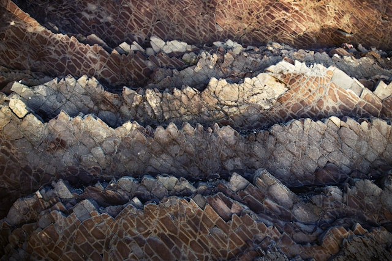
This chapter will help you get started with Python and set your environment up. There are a few different options available to run the scripts that are provided in this course.
We will dedicate time during the first day to make sure all students have their environment and code editors installed on their machines. It is advised however to try and install one before the course starts.
Each exercise is available in numerous formats. First, you may access them on the SPACE-GEOLOGY course website, under the tab Course. In this webpage, if you go to a specific exercise (or part) chapter, you can access it in pdf or in a JupyterNotebook (.ipynb) format.
We recommend using the notebook format, as it allows you to read the explanations while running the code snippets. This requires to have Python installed, alongside a code editor. Alternatively, you may decide to use Google Colab, an online platform to run notebooks directly. Another option is to use QGIS, which has a dedicated plugin to run notebooks.
All information to set up your environment are provided below.
Python
The SPACE-GEOLOGY course is based on Python, a widespread programming language used, amongst other things, to perform data analysis. The Python ecosystem is made of libraries and packages designed to perform specific tasks. We will use some of them that are focusing on data retrieval, analysis (spatial or non spatial) and visualization.
Installing Python
Normally, most of the computers should have Python already installed, however we are going to use the Python 3.12 version, which you can download from the Python website.
Libraries
In this course, we will require the following libraries:
xarrayA Python library for working with labeled multi-dimensional arrays, providing a Dataset structure that combines multiple variables sharing the same coordinate system.rioxarrayAn extension of xarray that adds geospatial capabilities, enabling CRS-aware operations on raster datasets directly within the xarray framework.pandasA Python library for data manipulation and analysis, providing a DataFrame structure that organizes tabular data with named columns and row indices.matplotlibA comprehensive plotting library for creating static, animated, and interactive visualizations in Python.numpyThe fundamental package for efficient numerical computing in Python, providing fast arrays and mathematical operations.rasterioA Python library for reading, writing, and manipulating geospatial raster data using GDAL under the hood.requestsA simple and elegant HTTP library for sending web requests and interacting with APIs.geopandasAn extension of pandas for working with geospatial vector data, adding geometry support and spatial operations to DataFrames.osA Python standard library module for interacting with the operating system, including file and directory management.xml.etree.ElementTreeA Python standard library module for parsing and navigating XML documents as a tree structure, where each element’s tag, attributes, and text are accessible as nodes.scipyA Python library for scientific computing, providing tools for statistics, optimization, interpolation, and signal processing built on top ofnumpy
Code editors
Independent of your code editor, you should create a folder SPACE-GEOLOGY-2026 on your machine, in a location of your choosing. This is where we will save our notebooks, store results and load input data from.
Visual Studio (VS) Code
VS Code is a code editor developed by Microsoft. It is available for Windows, macOS, or Linux.
You may follow the installation instructions associated to the operating system you are using, just make sure to have the Jupyter extension also installed.
Open visual studio code, click on “Open folder”
Select your “SPACE-GEOLOGY_2026” folder and open it. If required, specify that you trust the project.
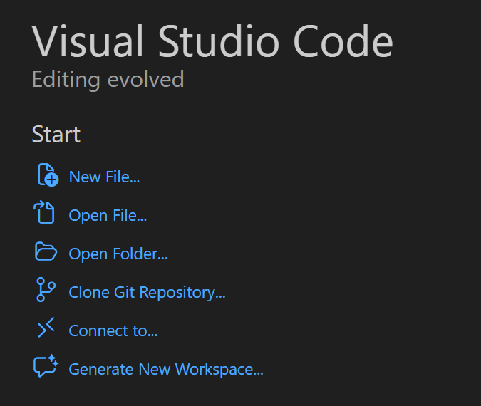
Go to the search bar on top of the window and click on “Show and Run Commands” (or just type Ctrl + Shift + P)
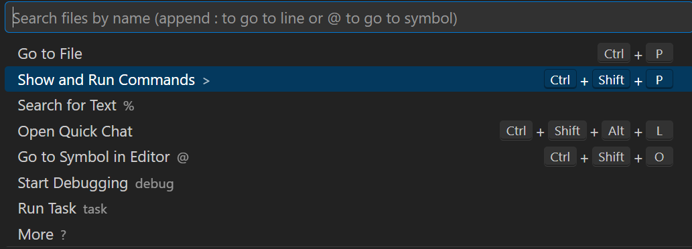
Search and click on “Python Create Environment” and select the “venv” option
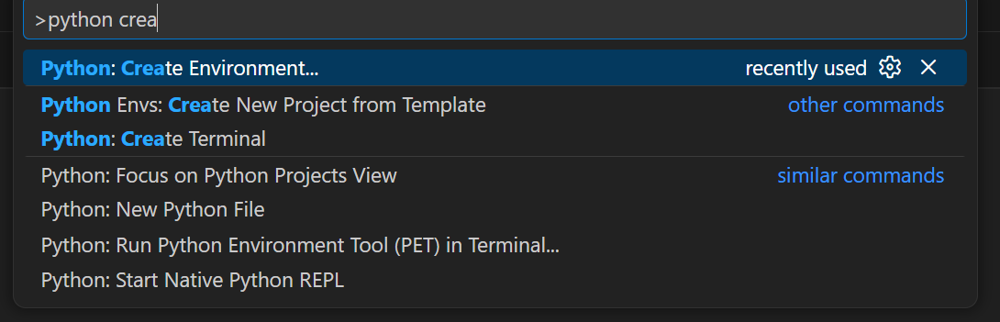
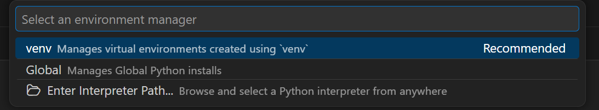
Select the correct version (we will use Python 3.12, so any of the Python 3.12 will work).
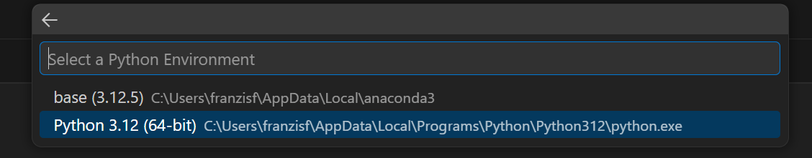
Keep .venv as the virtual environment folder name.
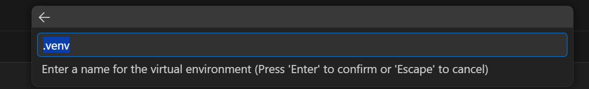
Add required packages to install by clicking on “Search PyPI packages”. The full is in the section above. Notice that some of the libraries are already included, so for now, let’s just add xarray and pandas. We will install others later.
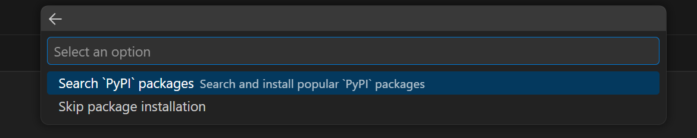
You should see a dialog box opening on the bottom left part of the screen saying that it is installing packages and creating the virtual environment.
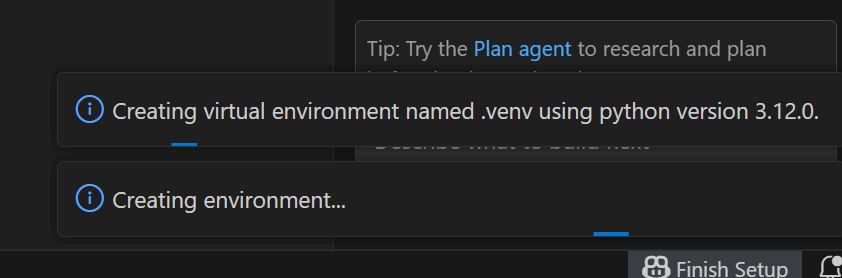
If successful, you should now see the virtual environment activated. Go to “View” and select “Terminal”. A window should open on the bottom of the screen with the path to your SPACE-GEOLOGY-2026 folder, with a green (.venv) before it. This means that your environment is correctly installed and running.
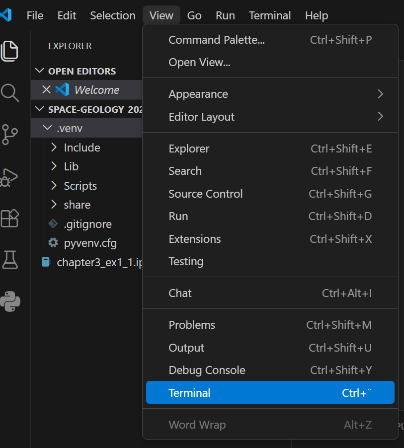
Now, let’s go to the terminal. We previously only installed xarray and pandas. We need to install more libraries before starting to work. We will use the package installer for Python to manually install them. The command you need to type in your terminal is
pip install <package>
so for instance, to install rioxarray, just type
pip install rioxarray
You will see some code running to install rioxarary and other dependencies. Repeat this for other packages until all required ones are installed. If you try and install a package that is already installed, no problem, you will simply see a message stating that the requirement is already satisfied.
Note: there are some libraries that are part of the Python standard libraries like os or xml.etree.ElementTree, no need to install these.
You are now ready to run your code !
PyCharm
PyCharm is an Integrated Development Environment (IDE) for Python that is also available for Windows, macOS, or Linux.
With its latest version, PyCharm now supports the integration of Jupyter Notebooks.
Open PyCharm, click on “Open”
Select your “SPACE-GEOLOGY_2026” folder and open it. If required, specify that you trust the project.
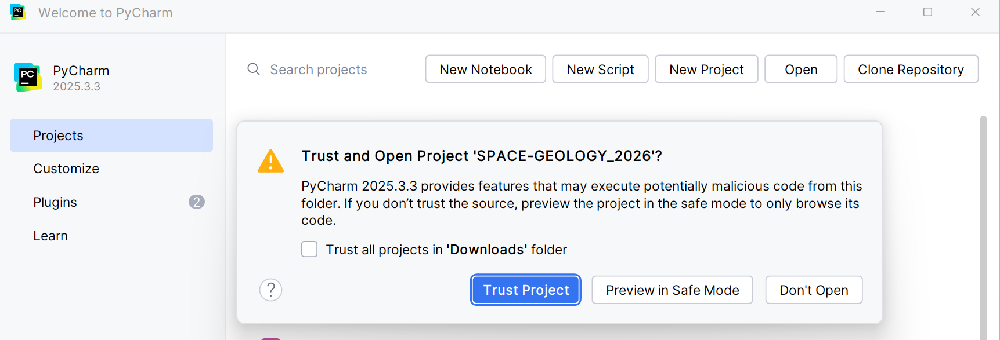
Once opened, go the main menu (top left corner horizontal lines icon), and select “Settings”.
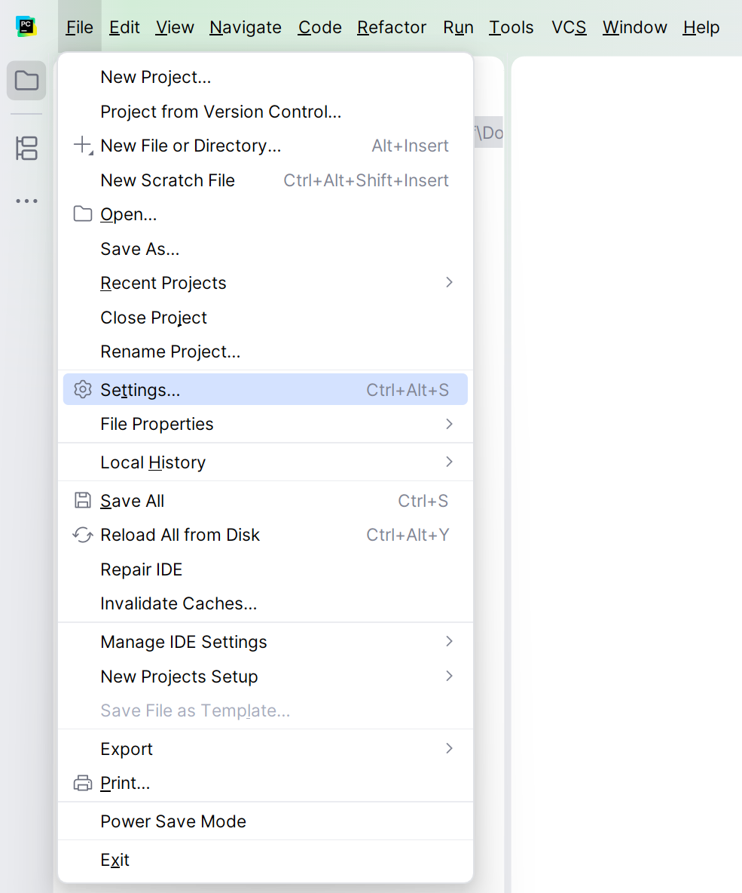
A new window should appear. If not selected already, click on “Python/Interpreter” and click on the “Add interpreter” button. Choose the option “Add local interpreter”
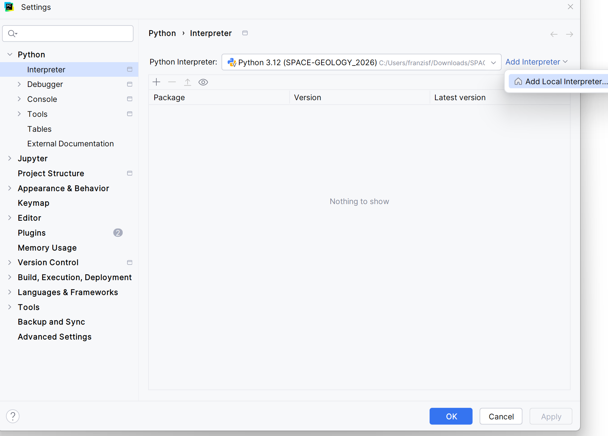
Another window should open where you can configure the virtual environment. Select “Generate new”, choose a 3.12 version of Python and keep the path in your “SPACE-GEOLOGY-2026” folder. CLick “OK” and wait for the venv to be installed.
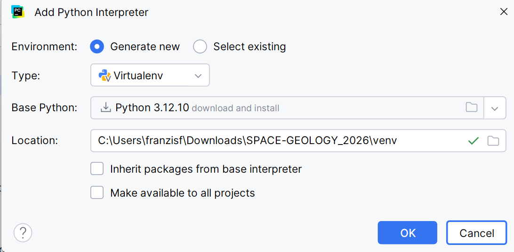
If successful, you should now see the virtual environment activated. Go to the bottom right corner and click on the terminal icon . You can also open the terminal by using Alt + F12. A window should open on the bottom of the screen with the path to your SPACE-GEOLOGY-2026 folder, and a (venv) before it. This means that your environment is correctly installed and running.
Now, another step is to install the required libraries before starting to work. We will use the package installer for Python to manually install them. The command you need to type in your terminal is:
pip install <package>
so for instance, to install rioxarray, just type
pip install rioxarray
You will see some code running to install rioxarary and other dependencies. Repeat this for other packages until all required ones are installed. If you try and install a package that is already installed, no problem, you will simply see a message stating that the requirement is already satisfied.
Note: there are some libraries that are part of the Python standard libraries like os or xml.etree.ElementTree, no need to install these.
You are now ready to run your code !
Google Colab
Google Colab is an online service for running Jupyter Notebooks without the need for local code editor installation. It can simply be accessed from your browser and already contains most of the required libraries.
To use Colab, you will require a Google account. Go to the website and login. Once logged in, you may simply select the “Upload” option and click on “Browse” to load the notebook from your computer.
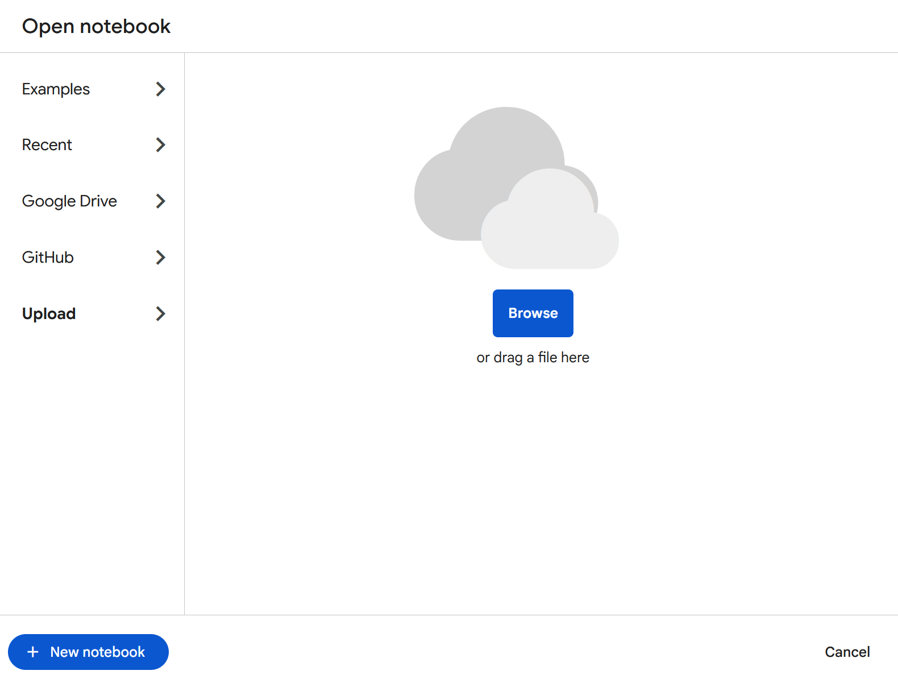
You are now ready to run your code !
QGIS Notebook
QGIS Notebook is a plugin that can be installed in QGIS to run and write notebooks. It uses the Python environment that comes with QGIS.
To install the plugin, open QGIS, and go to the top options and select “Plugins”, then click on “Manage and Install Plugins”.
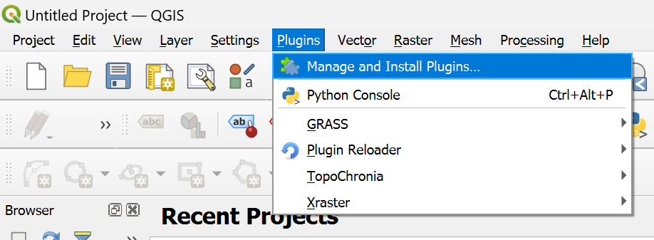
A new window should open. Click on “All” and search “Notebook”. You should see it appear. CLick on “Install Plugin”
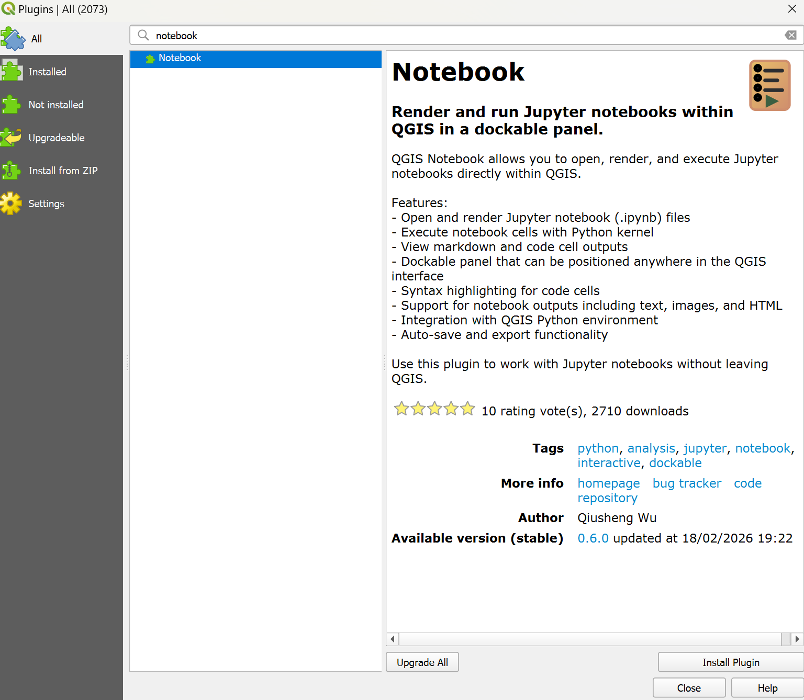
If successfully installed, you should see a message pop up in the top of this window, and some icons appearing in your toolbar :
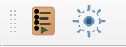
. Clicking on the first icon will open the notebook user interface.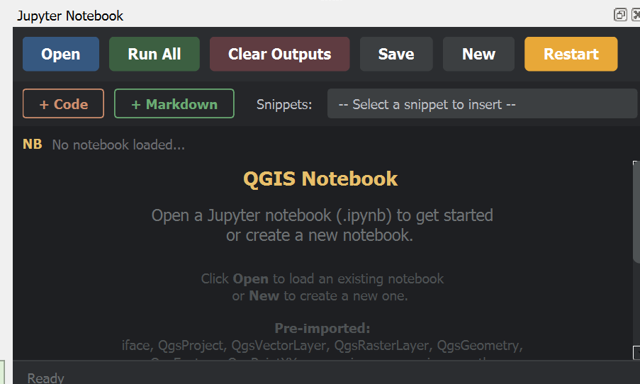
The notebooks from the exercise can be opened by just clicking on “Open” and load your notebooks.
You are now ready to run your code !
Access data
Exercise I
The first exercise is based on data that can be accessed to the Palaeo Data Cube (PDC). The PDC provides global maps of the Earth in deep-time (currently of the last 545 million years, in 45 steps). It is inspired by the present-day Earth Observations (EO) Data Cubes, and provides access to data products in high-resolution of the Earth system long-term evolution.
For the two first part of this exercise, you do not need to download or make a local copy of the data, we will access it directly using the Web Coverage Services standard from the Open Geospatial Consortium (OGC). For the third part, we will use outputs from climate simulations (courtesy of N. Werner, ETH Zürich), which can be accessed from the data/climate folder directly in the course repositoryhttps://github.com/unige-cgeom/SPACE-GEOLOGY/tree/main/course/data/climate.
To save the climate folder to your local machine, go to https://download-directory.github.io/ and insert the URL. This will download a zip folder with all Phanerozoic climate files.
The climate data is in NetCDF and is self described, which means it already contains the metadata. All other maps we will use (palaeogeography, seafloor ages, crustal and lithospheric thickness) are described in the Palaeo Data Cube Metadata Catalogue.
Exercise II
The second exercises focuses on the Sion region in Valais. We provide the Digital Elevation Model (DEM) for our area of interest in the data/DEM folder https://github.com/unige-cgeom/SPACE-GEOLOGY/tree/main/course/data/DEM. We also provide shapefiles of lithologies and instabilities in the data/shapefiles folder https://github.com/unige-cgeom/SPACE-GEOLOGY/tree/main/course/data/shapefiles.
You may use the same tool as above to download the folder.
Organizing your workspace
All noteookooks can be downloaded from each exercise webpage. They are, by default, configured to retrieve local data inside a data folder that is in the same directory as the notebook. We therefore recomment following this practice and configure your workspace as:
SPACE-GEOLOGY-2026/
├── venv/
├── data/
│ ├── DEM/
│ ├── shapefiles/
│ └── climate/
├── chapter3_ex1_1.ipynb
├── chapter4_ex1_2.ipynb
├── chapter5_ex1_3.ipynb
└── chapter6_ex2.ipynb